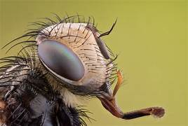
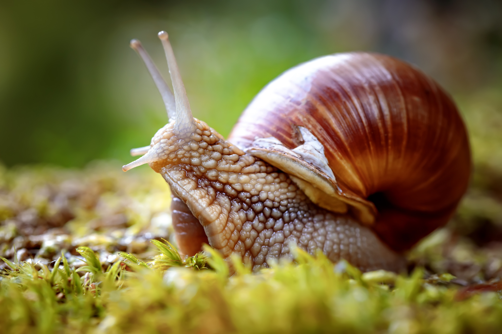
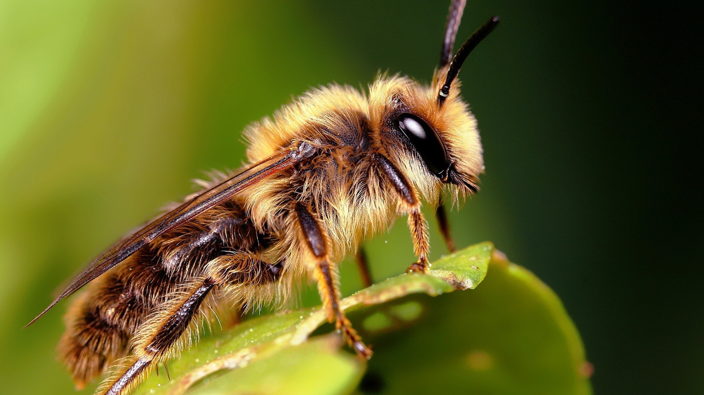

Why do we need small animals to have a good environment?

Smaller animals are also vital protagonists in keeping our environment balanced. Many are invertebrates and insects, crucial for soil fertility and other ecological functions that maintain the health of our planet. By pollinating plants of all shapes, sizes and uses, small animals help to reproduce many plant species, including the staple food crops that feed humans, livestock and wild animals. Aphids transfer pollen to the stigma of a sunflower. The tooth fungus, Hydnum repandum, fruiting on an old stump. Viewed from above. Photo by Andrea Gustavson/Corbis Ants and other small animals in the beetle, spider, cricket and rove-beetle families break down moss, leaves, fallen fruits and wooden objects to nourish and release the nutrients in their waste back to the soil. They’re also food for voracious creatures that are bigger than they are: herons, narwhals, finches, mice. Taken together, their great diversity and takings, such as the estimated 1 million types of insects, make small creatures vital links in food chains. They solidify and sustain ecosystems in their many forms, from stinkbugs and mayflies to masked crabs and clingfish and shorebirds. Their countless burrows shape the landscape, while their bodies shape us. Courtesy Wikimedia.
Mollusks

snail
Mollusks are a diverse and populous group of invertebrates, with an incredible number of species and levels of biological diversity – and all the uncertainties of how all that diversity matters for their ecological roles and for human uses and interactions. The phylum Mollusca contains species that are familiar to everyone: snails, clams and squids, all of which have bodies made up of soft tissue, a muscular foot and, in most, a hard shell for armour. They support many predators as food sources, and they help cycle nutrients. Filter-feeding bivalves such as mussels contribute to overall water health by filtering the water to remove particles, for instance.
Molluscs couldn’t be more important to human societies, some of which began to exploit many molluscs for food and economic activities. Many molluscs are harvested and eaten; they are a rich source of vitamins and proteins, and have become edible staples in a number of cultures (think of escargot, clam chowder and calamari), while restricted niches became targets of aesthetic and economic exploitation (pearl-farming, begun around 400 years ago, has a significant human track record).
Out of the 32 phyla of animals that have survived the most recent mass extinction (we’re still in the middle of it, by the way), perhaps none is more diverse than the molluscs, or mollusks. The annelids (segmented worms) might rival the molluscs in terms of number of species, but mollusks are probably more widespread and exhibit greater anatomical and behavioural complexity. It is difficult to say exactly how many species of molluscs exist: estimates of the terrestrial arthropods, which include insects and spiders, comprise six or seven times the number of mammal species, so 100,000 or more molluscs might be recognised, and we’ve only just scratched the surface of the oceans. Here we have the largest group of animals with a binomial name, among the most evolutionarily successful group of animals (70 per cent of species diversity lies in trace fossils such as worm castings), and among the most variable and shape-shifting. They are found everywhere and show it. In addition to two of the largest animal neurological centres (the giant squid and the triangle or octopus), they include snails in your garden, the nudibranch in the sea anemones, turritellas in the rockpools, garden slugs, banana slugs, siphonophoras, limpets, whelks, glory worms, colourspec and chank shells, and that other unappreciated slug, the one that lives in your body and supplies you with vitamins. Molluscs show a fantastical range of anatomical and behavioural complexity, and probably nowhere outside the vertebrates is a creature’s anatomical range so complex and varied as in the cephalopods (squid, octopus, cuttlefish and their allies). But they’re in trouble. Molluscs are threatened by habitat loss, pollution and overextraction. We can do a better job of conservation if only we appreciate their greatness and beauty, in their diversity and anatomical wonder. They play an important part in cultural life on every continent (outside Antarctica).
Platyhelminths
Platyhelminths, or flatworms, are an extremely diverse group of invertebrates, an unusual type of animal with interesting characteristics that contribute to their ecological significance and impact upon humans in select instances. Flatworms are soft and flattened animals that can be freshwater, marine or damp terrestrial organisms. They are simple animals due to their lack of a body cavity and specific respiratory or circulatory systems. Flatworms are known to demonstrate amazing regeneration, and they are the only animals that can regenerate entire organisms from body fragments.
Platyhelminths are key members of the ecosystem through roles in nutrient cycling and food webs. As decomposers, flatworms in freshwater environments help to break down bits of organic matter into simpler nutrients, thus contributing to nutrient cycling in the system. Some species function as parasites: several kinds of parasitic flatworms have been found to infect humans and other animals, including liver flukes and blood flukes that cause disease in humans such as schistosomiasis. These species and their parasitic partnerships have important implications for human health, and require active efforts in terms of disease prevention and control. Lastly, parasitic flatworms are important to their ecosystems through their role in research. Flatworms have been broadly studied as models in the cells and tissues related to regeneration and tissue repair, which provide exciting new insights into cellular processes. Understanding the cellular mechanisms of flatworms and their parasites could lead to new medical interventions.
platyhelminths are quite diverse, displaying tens of thousands of species in all, including free-living flatworms and many types of parasitic forms. This vast array of platyhelminths occurs as adaptations to a wide range of biotic and abiotic conditions. Among the free-living platyhelminths, planarians are recognised as unusual because they can be readily cultured, they readily regenerate body parts, and they do not behave like other worms. Scientists have learned much about the workings of animal neural networks from studying planarian nervous systems. Planarians are a favourite study animal in scientific research that leads to new insights regarding neuroscience and regenerative medicine. Parasitic platyhelminths typically display a wider range of adaptations to parasitism, including complex life cycles involving multiple hosts. Individual platyhelminth species encompassed within many parasitic groups adapt for a narrow niche in the spectrum of parasitic forms, and often have a unique combination of biology and ecology. Ecological and medical costs from platyhelminths are known for habitats in which platyhelminths are endemic, but there is understudied biodiversity in platyhelminthes at sea, and far less information available in areas disturbed by human activities. One of the most promising areas for biodiversity conservation regarding platyhelminths is the competition between knowledge of platyhelminthes and the need for control of invasive parasites that threaten human and animal populations.
Annelida
The large phylum Annelida, or segmented worms, help maintain ecological balance on Earth. Annelida are segmented worms, and this characteristic greatly contributes to their significance in the ecosystem. Annelida have shown enormous versatility, and exhibit a range of exceptional features making them a major earthworm class. Due to their segmented body, annelids possess extraordinary flexibility and mobility. A typical annelid has a body that is divided into segments. Each segment contains a pair of setae, or bristles, and well-developed coelom. The coelom supports the animal considerably, while also housing its vital organs. The coelomic or fluid-filled body cavity contributes to the segmented body design, and enhances annelids’ biodiversity and adaptability. Different types of annelida can be found in diverse habitats, such as soils and fresh water bodies to the dark abyss of the deep seabed.
Annelids offer significant ecosystem services to other life forms including humans by playing various ecological roles. For example, they significantly contribute to soil health. Annelids are known for their great burrowing capabilities. Earthworms, which are one well-known subgroup of Annelida, enhance the physical condition of the soil by mixing soils, their burrowing activity promoting soil aeration and microbial growth. They thus improve the quality of the soil and have a critical impact on plant fertility and growth. Earthworms also help filter water and reduce runoff by improving the physical condition of soil structures.Several Annelida subgroups are used as bioindicators in aquatic environments, serving as a reflection of water pollution and habitat health. Annelids are also an integral part of marine food chains, acting as a key food source for diverse aquatic life.
Annelids belong to the phylum Annelida; there are between 17,000 and 20,000 species known, with estimates on how many more there could be as yet unknown, but likely in the millions. Annelids are incredibly diverse, with familiar fossorial and freshwater forms, such as earthworms (kee-note’ Ma-dad’s, according to his childish spelling) and blood-sucking leeches (one of his childhood nightmares). Robust, opportunistic marine polychaetes abound, with intricate and frequently colourful appendages. There is surprising diversity in their ways of life and habitats, from interstitial forms, which live in the narrowest of freshwater streambeds, to the deepest trenches of oceanic trenches.
In short, the segmented body form of annelids is just one small part of their immense significance to our planet. The range of ecosystem services that they provide, from improving soil integrity to maintaining water quality, highlight a species that substantially contributes to diverse and thriving ecosystems on Earth. The diversity of the Annelida taxonomic group, the impressive adaptiveness of annelids across evolutionary time, and the myriad forms they inhabit reflect in many ways the balance of nature and its diversity – all life forms on this Earth are tied together.
Insects

bee
Beetles, wasps, ants, flies, butterflies, mosquitoes and bees are all insects. Taken together, these animals comprise the largest and most diverse group of animals alive on Earth. Looking at their formidable success, it is easy to ascribe the origin of insects to divine creation – until one considers their exquisite characteristics that have helped them to become so successful in a world of wonders and competition. So how did insects manage to become the most successful animals alive? Let’s start with the insect’s outer exoskeleton. An exoskeleton is a tough, protective outer covering. It provides an insect with structure and flexibility, plus a hard shell that protects it against harm from its environment. Insect growth involves the moult, or shedding of the exoskeleton, which coincides with the insect’s reproduction or periods of Protection against environmental threats is one characteristic of most insects, but another is metamorphosis. Metamorphosis is an insect’s ability to change its form during development: moving from one body type or stage of life to another. This developmental variation permits insects to explore a broader range of environments, uniquely exploiting diverse ecological niches in each stage of their life cycle. Small size, rampant reproduction, adaptable life history and the development of exoskeletons and metamorphosis must all be considered in accounting for why there is so much diversity among the insects – more than one million species have been described, and there are potentially another 10 million left to describe.
Insects also provide innumerable ecosystem services. Much of the pollination that plants need for reproduction is provided by insects. In fact, insects – especially bees, butterflies and beetles – carry out about 80 per cent of all pollination worldwide. They allow many more plants than would otherwise reproduce to pass on their genes, including many of our most important crops. Insects also play a vital role in the nutrient cycles by eating, defecating and decaying what many animals cannot – from roadkill to rotten fruit, and the poo of other animals, insects help to break down organic matter and return essential nutrients to the soil. They, along with decomposers such as fungi, are a cornerstone of ecological breakdown. This is one reason why some have predicted deep ecological consequences of the insect declines. From a food chain perspective, insects are also vital. They are one of the most important food sources worldwide for many birds, mammals and invertebrates.
Their astonishing diversity of forms, sizes and behaviours, their almost omnipresence on Earth, their incredible adaptations (the tube-like mouthparts of butterflies for sipping nectar, and the sturdy jaws of beetles for chewing tough plant material), and the amazing variety of ecosystems in which they have evolved their lifestyles all attest to their profusion and beauty. Their protection is an absolute necessity if we want to maintain the health and resilience of our planet’s ecosystems. Insect abundance and diversity, as well as their crucial ecological roles, demonstrates the immense value and complexity of the life-web.